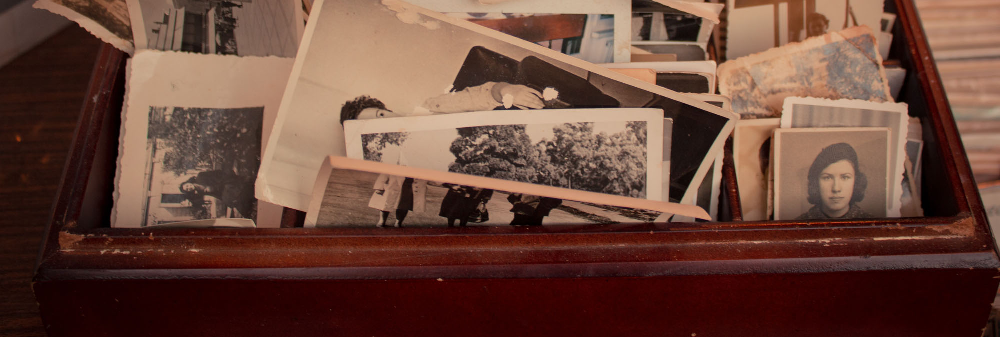
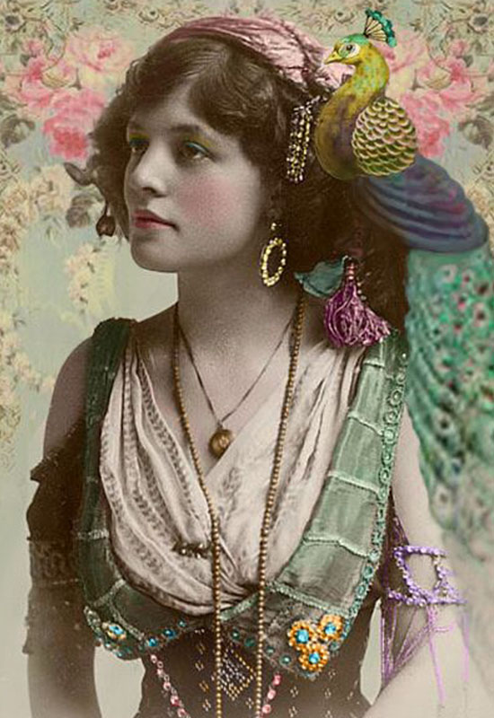
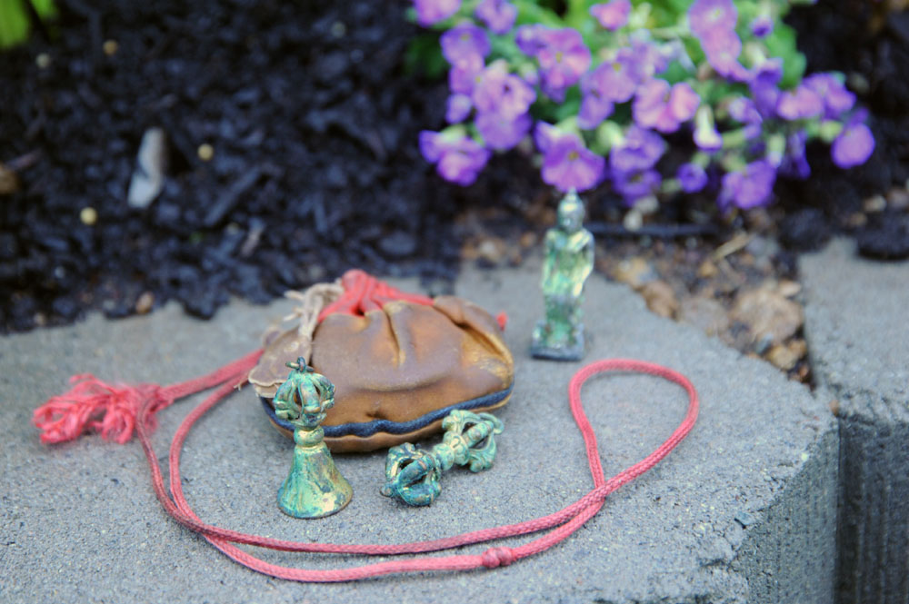
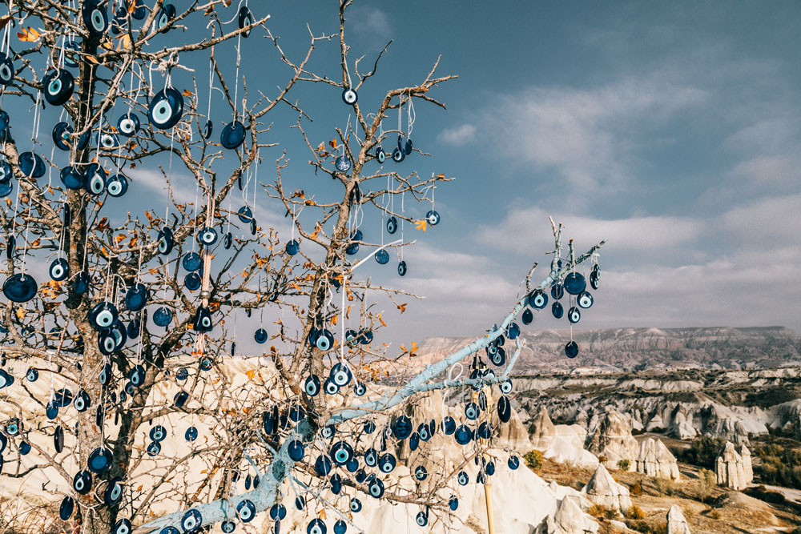
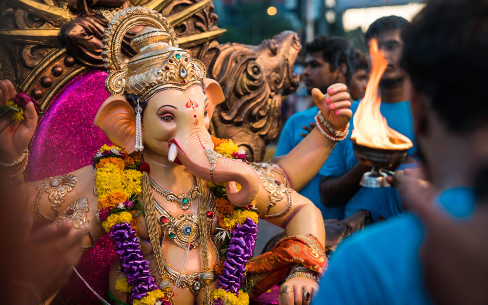

Curiosa Pérez
I feel, Jewelry is more than just a pretty piece that is purchased for the monetary value of a stone or its precious metals. I have found that this perspective is just one small element to a bigger picture.
 I have travelled all over the world and even researched in small villages that held onto ancient traditions. Through my years in this field, I have discovered so much more depth to my knowledge of jewelry and adornment. I found that history, art, tradition and culture can not help but to be a big influence on adornment. Culture becomes embedded into this medium through every stitched or stamped symbol in fabric and every carved and engraved mark in metal jewelry.
My journey to developing my voice in adornment has taken many twists and turns. After art school, I began exploring and collecting hand made traditional clothing, costumes, objects and jewelry. I found history and culture so fascinating that it has influenced my style and now I embed my own history into my personal jewelry work.
I found, Nomadic people wore their wealth because they were on the move and there was not a sedentary place to keep it safe. Jewelry pieces and adornment were worn in layers of expressive moveable rich culture documenting a lifestyle and story of each individual culture.
 At the root of all ancient adornment I found a story line of symbolism created by its people with what colors were around them, what food they hoped to catch, what evil spirits they hoped to repel, recorded wars, love, marriages,births and more.
And while pieces were being created by artists and craftsmen of its time, one can see their hopes, fears, desires, and material that people felt had an importance. Folk tales, music and dance were a big part of building shapes of adornment and jewelry.
 I witnessed beautiful cultural dances as a big picture that included magnificent visual adornment of costumes and layers of jewelry moveable and chiming with each drum beat, Adornment in its splendor that tells a holistic and complete story of individual culture.
As for jewelry, I began to see a common thread throughout all cultures. .I collected Magical pieces that were created of metal, stone, gems, small objects, marks, icons and symbolism to protect and ward off evil and to bring abundance, love, prosperity and other qualities that one would wish for, as well as warding off the negative evil eye.
These magical jewelry pieces were and are called Talismans, Amulets and Prayer boxes. They are personal pieces of adornment built with a high and specific vibration.
 Talismans are objects charged with positive or negative energy by a person through energies of the moon, the sun, day of the week, Talismans, at its core, spread their magic by a repetition of seeing a word (or an object that makes you feel a particular way such as happy, enlightened or in love or full with strength and abundance. Talismans are built to bring us joy, happiness, with the repetition of viewing and by charging qualities.
This knowledge and research is at the core of all of my current work and vibrant line of jewelry. I build vibrationally charged Talismans and my current line is brimming with this energy. I encourage light, love and joy into our world through the idea of Talismans, gems and unusual objects. (link to writings on my current jewelry line and photos)
Even now, Adornment speaks of who we are or who we want to become, our social status and how we feel about ourselves through subtle symbolism of shape, color, movement and material.
Personal adornment tells your own story. Universally, known as Talismans.